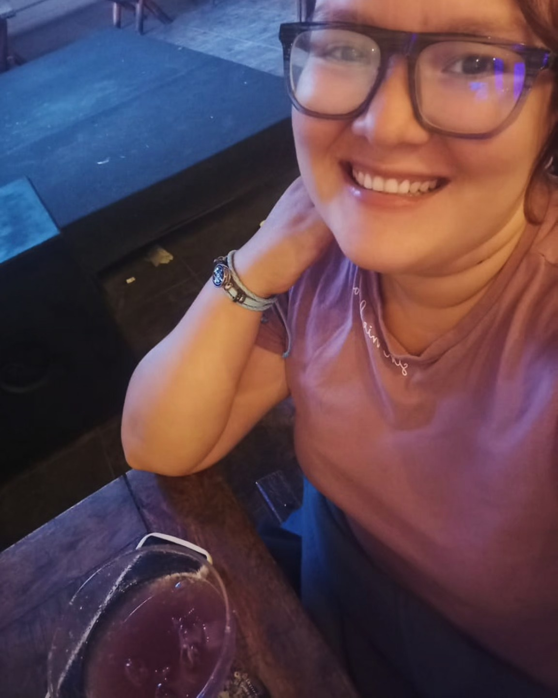

Mi Curriculum vitae

Noelia Loayza
Linkedin
Administrador de empresas
Profesional técnico en Administración de empresas con gran pasión por gestión de personal y liderazgo con rápido análisis para la resolución de problemas, orientado a resultados y altamente resiliente. Actualmente buscando nuevos retos profesionales que le permitan crecer como administrador a nivel nacional con un equipo dinámico y de alto rendimiento.
Datos personales
- Nombre: Noelia Loayza Vilela
- Lugar de nacimiento: Sullana-Piura
- Fecha de nacimiento: 10 diciembre 1998
Educación
- Zegel Ipae - Porfesional Técnico en Administración de empresas (2021-2024)
- Udep - Ciencias de la educación (2015-2016)
- T.Almirante Miguel Grau - Arquitectura de plataformas (2015-2016)
Certificaciones
- Recuros humanos - Camara de Comercio
- Finanzas para emprendedores - Grupo Romero
- Excel intermedio - Grupo Romero
- Portugues Intermedio - Instituto DaSilva
Fuente:Noelia Loayza